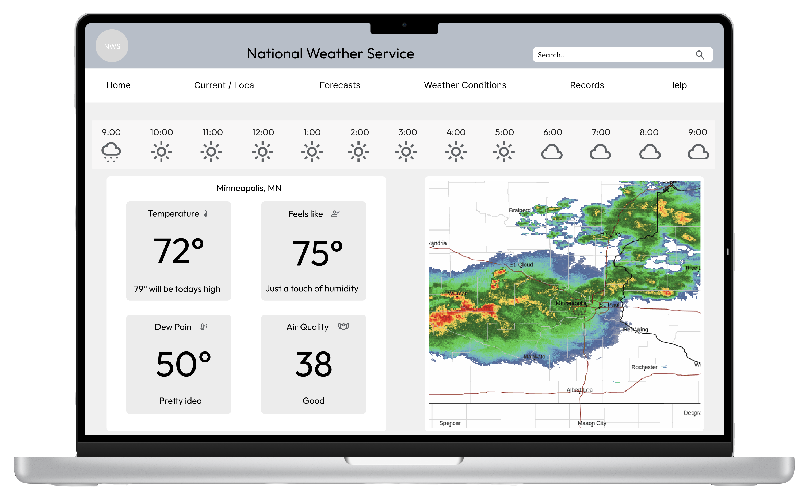

Everything is Workable
The National Weather Service is a valuable resource for a lot people. But like most of us, a little help is always welcome. On this redesign I attempted to bring a modern feel to weather.gov with a new look and reorganized navigation system. It was a ton of fun as the site has so much to offer..
Work completed in August, 2024 by Josh Kohanek
Learn more
Weather.gov
Weather.gov provides a ton of information. So much, in fact, that is can be hard to find on the site. The coloring is not ideal and does not pass accessibility standards at times. The navigation may make sense to a sailor that has been using it for 30 years, but it’s confusing to the rest of us.
Through research and testing, I did my best to redesign the home, Air Quality and Extended Forecast pages.
Research
The work begins
It was important to establish a baseline for how well the navigation was performing, as well as to gauge people's overall impressions of the site. Testing the existing weather.gov revealed the following key findings : (1) the overall amount of information offered and the way it was presented was overwhelming (2) the homepage was frenetic and needed to be simplified (3) users were unable to easily find what they were looking for in the navigation system.
Who Are You
It was my hypothesis users of this site might be retired aged progressives who believe in the collective good. They feel a civic duty when paying taxes and do not feel they need to look very far to see the results. Although far from perfect, the National Weather Service’s website offers a bounty of data and they prefers it to other sites / weather apps that charge fees or have advertising “pop ups”. This government site also seems to do a better job as compared to competitors when tracking weather on Lake Superior's “North Shore”.Scott regularly spends time in Schroeder, Minnesota and typically (1) checks the local forecast (2) keeps an eye on radar and (3) looks at the Hourly Air Quality Forecast (especially during wildfire season).

Problem Statment
Users of Weather.gov feel overwhelmed by the amount of information available on the website. This is a problem as the issue only compounds by the manner it is laid out, leaving users to get frustrated and use other weather sources.
Ideation & Design
A Good Traveler Has No Fixed Plan
When the time came to consider layout, simplicity was key. The existing weather.gov’s navigation felt like it may have been developed over time by several different hands. I needed users to be able to find what they were looking for quickly and easily.
Instead of trying to force “social media” and “records” into another category, I let them live on their own. Big and bold.
I created a style tile knowing it was just pointing towards a general course for the ship. The logo, buttons and colors would all change with time. But the style directions of “subtle cues” and “sensations that hint to a deeper meaning or feeling” stayed throughout. Possibly more than anything, I did not want this weather source to shock or cause fear. There are plenty of competitor websites that fill that quota.
Testing
Listening Fosters Transformation
I originally designed the app to have current local conditions on all of the various screens. I also wanted the dropdown to be accessible without having to look for it. Users hated both concepts when testing.
A hamburger menu was added and the dropdown lives inside it. The current “local conditions” aspect was reimagined and lives only on the home screen.
There were also changes that were more subtle but left lasting impacts. Users liked the news section but desired a clear definition on where it began on the page. I added a “headline” and that seemed to satisfy the requests. I also changed the drop down from “click” to “mouse in mouse out” as the initial navigation setting did not seem to match what users had expected.
Final
Bring it on home, honey
To say I learned “a lot” on this doesn’t even begin to describe. It was my first solo project and I wasn’t afraid to fail (I probably should have been). I think I wanted to create something super original and probably should have been more straight forward for things such as the navigation. You have to shoot your shot though, right?



.png)